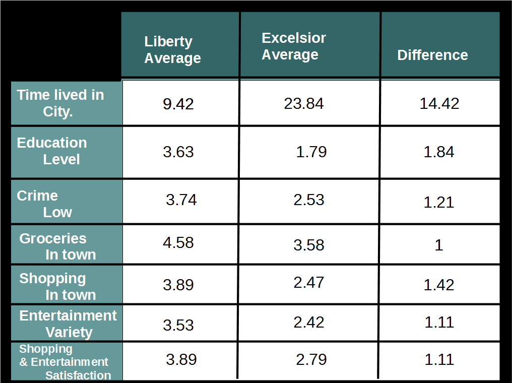

Results
Results and Recommendations
According to the data from our surveys, residents of Liberty are happier with their city and have better quality of life on our five life factors than residents of Excelsior Springs.
Of the thirty-nine items that measured satisfaction with or quality of life in the participant's city, thirty-six had better average ratings from Liberty residents, one was equal for both cities, and two had slightly better averages from Excelsior Springs.

{kind=link}
{kind=link}
Four items directly measured participants' happiness with their city. Beyond measuring which items had significantly higher averages in Liberty participants as mentioned above, we looked for items that significantly correlated with these four direct measures regardless of city in order to determine which of our variables might most effect happiness and satisfaction with life in one's city.
Correlations with direct measures of happiness, p = .001
Seven other variables correlated only with enjoying the city: low frequency of crime, generous and helpful people, ideal living situation, not minding to drive for entertainment, quality of school electives, entertainment in the town, and residence close to stores, schools, and jobs.
Interestingly, four of our five measured qualities (health, safety, resources, entertainment, and education) are represented in these correlations. . Only health is not represented; however, our study only included three items related to health, so this quality may not have been adequately measured, and the importance of physical education classes may be related to the importance of physical health. Based on these measures, what would most increase well-being in these cities, or presumably in any city, would be decreasing crime against individuals and property and fostering trusting relationships between neighbors. Encouraging citizens to continue education beyond high school and creating more and better grocery, clothing, and accessory shopping options in town should also increase satisfaction among residents.
When looking independently at the combined item averages of each category of variable, residents of both cities were most satisfied with their availability of resources (L = 4.14, E = 3.62) and least satisfied with their entertainment quality (L = 3.52, E = 2.97). Combined averages for the other three categories were as follows: Health: L = 4.10, E = 3.53; Safety: L = 3.92, E = 3.04; Education: L = 3.90, E = 3.61. In addition to entertainment, then, Liberty could most improve its qualities of education and safety while Excelsior Springs could most improve its qualities of safety and health. More research with residents would be helpful in determining specific steps to take to improve these qualities and increase average residents' well-being.